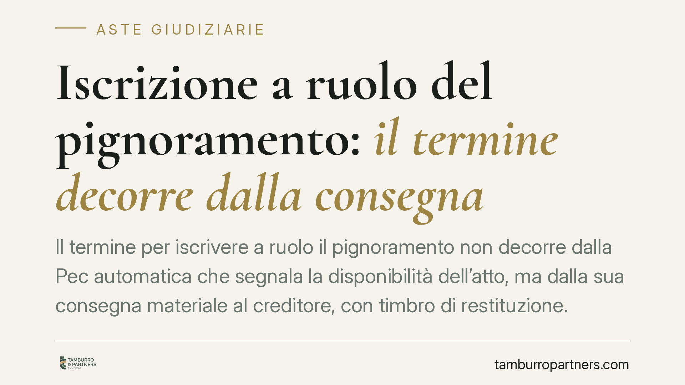

Iscrizione a ruolo del pignoramento: il termine decorre dalla consegna
Il termine per iscrivere a ruolo il pignoramento non decorre dalla Pec automatica che segnala la disponibilità dell'atto, ma dalla sua consegna materiale al creditore, con timbro di restituzione. Un chiarimento operativo che incide sul calcolo delle scadenze e, quindi, sull'efficacia stessa dell'esecuzione. Vediamo i termini di legge e come tutelarsi.

Il punto della questione
Quando l'ufficiale giudiziario esegue un pignoramento, restituisce l'atto al creditore, che deve poi iscriverlo a ruolo presso il tribunale entro un termine perentorio. Il problema pratico è stabilire da quale momento quel termine inizi a correre.
Oggi molti uffici NEP (Notificazioni, Esecuzioni e Protesti) inviano una Pec che segnala la mera disponibilità dell'atto restituito. La questione è se sia quella comunicazione elettronica a far scattare il conteggio, oppure la consegna fisica dell'atto munito del timbro di restituzione. La differenza non è teorica: chi sbaglia il dies a quo — cioè il giorno da cui parte il termine — rischia l'inefficacia del pignoramento.
Secondo l'orientamento ministeriale segnalato, il termine decorre dalla consegna materiale dell'atto al creditore, attestata dal timbro di restituzione, e non dalla Pec di semplice disponibilità. Va però precisato che una nota ministeriale ha natura di indirizzo amministrativo interno: non vincola il giudice dell'esecuzione, che resta libero di valutare la tempestività dell'iscrizione secondo la legge processuale.
Inquadramento normativo
I termini per l'iscrizione a ruolo sono fissati, a pena di inefficacia del pignoramento, dal codice di procedura civile:
- Espropriazione mobiliare presso il debitore: l'art. 518, comma 6, c.p.c. prevede il deposito della nota di iscrizione a ruolo, con copia del titolo esecutivo, del precetto e del verbale di pignoramento, entro quindici giorni dalla consegna del verbale al creditore.
- Espropriazione presso terzi: l'art. 543, comma 4, c.p.c. impone il deposito entro trenta giorni dalla consegna dell'atto al creditore.
- Espropriazione immobiliare: l'art. 557, comma 2, c.p.c. richiede il deposito entro quindici giorni dalla consegna dell'atto pignorato.
In tutti e tre i casi il legislatore àncora la decorrenza alla consegna dell'atto al creditore. È questo il dato testuale che sorregge la lettura fondata sul momento materiale di restituzione, con il relativo timbro, piuttosto che sulla comunicazione telematica di disponibilità.
Sul piano interpretativo va ricordato che la giurisprudenza di legittimità tende a valutare i termini di iscrizione a ruolo in senso rigoroso, essendo posti a pena di inefficacia: il rispetto della scadenza va provato in modo certo. Da qui l'importanza di individuare con precisione la data di consegna documentata.
> Nota. La data e il protocollo esatti della comunicazione ministeriale richiamata dalla stampa specializzata andrebbero verificati alla fonte prima di farne uso in atti difensivi. Ci limitiamo a segnalarne il contenuto, senza attribuirle carattere di fonte normativa.
Implicazioni pratiche
Per il creditore procedente e per il difensore cambia il metodo di calcolo delle scadenze. Affidarsi alla data della Pec di disponibilità come punto di partenza può portare a due esiti opposti:
- se si conta dalla Pec e questa precede la consegna materiale, si rischia di ritenere il termine più stretto di quanto sia in realtà;
- se si conta dalla Pec e questa segue o coincide con un ritiro tardivo, si rischia di sottovalutare il tempo effettivamente disponibile, o al contrario di lasciar scadere il termine reale.
Il riferimento sicuro resta il timbro di restituzione apposto sull'atto: è la data che documenta la consegna e che il giudice dell'esecuzione può verificare.
Resta ferma la prudenza: fino a un consolidamento giurisprudenziale, il comportamento più protettivo è iscrivere a ruolo con congruo anticipo rispetto alla scadenza più stringente ipotizzabile, senza attendere gli ultimi giorni.
Cosa fare in concreto
- Documenta la consegna: conserva l'atto restituito con il timbro dell'ufficio NEP e annota la data di ritiro come dies a quo.
- Non confondere le comunicazioni: distingui la Pec di semplice disponibilità dalla consegna materiale; archivia entrambe, ma calcola i termini dalla consegna.
- Verifica il termine corretto: quindici giorni per mobiliare e immobiliare, trenta giorni per l'espropriazione presso terzi.
- Iscrivi con anticipo: deposita la nota di iscrizione a ruolo alcuni giorni prima della scadenza, per assorbire eventuali imprevisti.
- Prepara la prova: tieni pronta la documentazione della data di consegna in vista di possibili eccezioni sulla tempestività.
---
Contributo informativo a cura di Tamburro & Partners Avvocati. Non costituisce parere legale.
Comprare bene all’asta si può.
Se vuoi acquistare un immobile all’asta in sicurezza o difendere un esecutato, scrivi allo studio. Ti rispondiamo entro un giorno lavorativo.